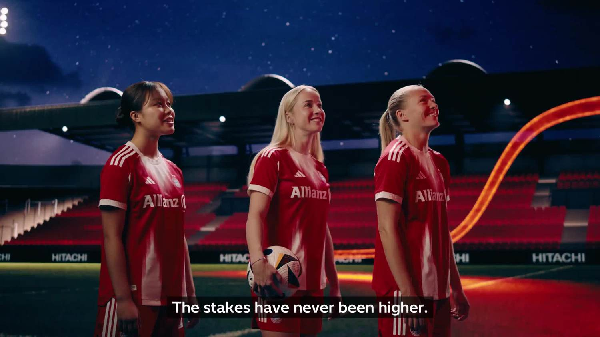
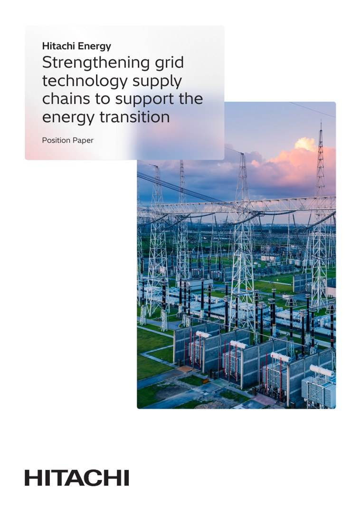

¿Qué es The Next 25?
Dando energía a todos nuestros futuros. Cómo el próximo cuarto de siglo de la electricidad redefinirá los negocios, transformará la cultura y cambiará nuestro mundo.
La demanda de electricidad crece de forma exponencial. La cadena de suministro del transporte eléctrico no da abasto y la volatilidad geopolítica agrava el riesgo. La capacidad de la red se ha convertido en el cuello de botella de la ambición humana: nuestros mayores planes chocan con un techo invisible.
En 2050, la demanda mundial de electricidad podría superar los 40.000 TWh, impulsada por los mercados emergentes. Como empresa líder mundial en electrificación, nos centramos en las infraestructuras donde la restricción es más aguda. Construyendo redes fiables, resilientes, seguras, asequibles y sostenibles, convertimos la escasez en abundancia.
Una misión, diez historias
The Next 25 se despliega en diez historias, del estadio al centro de datos y a la planta de la fábrica. Todas siguen el mismo hilo: la energía limpia existe, y la red decide quién puede usarla. Empieza por donde quieras. Todas están conectadas.
Por qué no basta con pedir un transformador
El cuello de botella tiene forma física. La demanda de tecnologías de red ha superado la capacidad mundial de fabricación y ha alargado los plazos de entrega de los transformadores, los equipos de alta tensión y los cables que necesita cada proyecto. Detrás hay mercados volátiles de cobre, aluminio y acero eléctrico, una logística tensionada y escasez de los profesionales cualificados que lo fabrican e instalan todo.
Nada de esto es irreparable. El informe que hay detrás de esta historia explica qué cierra la brecha: visibilidad a largo plazo para que los fabricantes inviertan con confianza, permisos más rápidos, normalización para que las fábricas puedan crecer y canteras de profesionales formadas años antes de que se necesiten. La escasez es una decisión que todavía estamos tomando.

Reforzar las cadenas de suministro de tecnología de red
El documento de posición completo sobre por qué las cadenas de suministro de tecnología de red se convirtieron en el límite de la transición energética, y las medidas que las desbloquean.